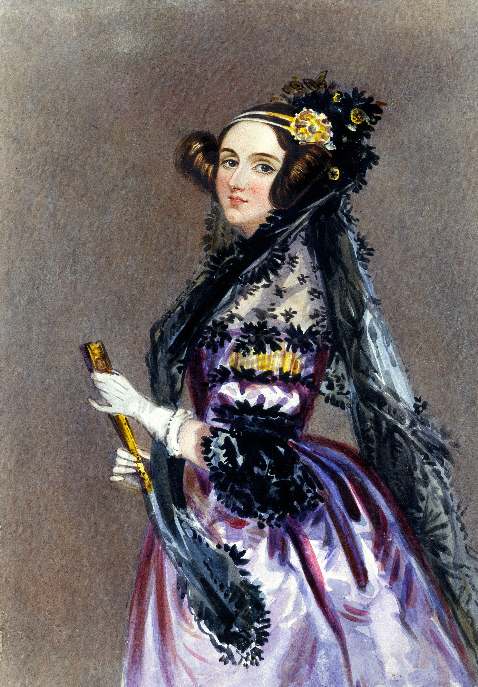

Augusta Ada King
Countess of Lovelace

Watercolour portrait of Ada King, Countess of Lovelace, circa 1840, possibly by Alfred Edward Chalon
Born Augusta Ada Byron on December 10, 1815, the daughter of the famous poet Lord Byron and later Countess of Lovelace, Ada was a mathematician ahead of her time. She is chiefy famous for her work on Charles Babbage's early 'computer', the Analytical Engine. Though the Analytical Engine was not constructed until 1941, nearly 90 years after death, Ada was one of the first to recognize the amazing potential of computing and is believed to have published one of the algorithms.
Visit Wikipedia to learn more about this brilliant woman.